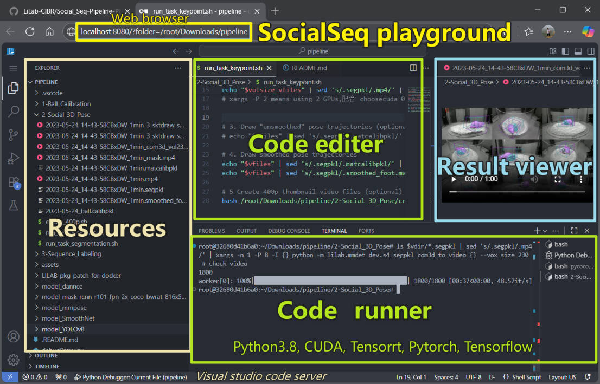

什么是游乐场
SocialSeq 流程游乐场（Pipeline playground）是一个基于docker打包的代码环境，旨在通过在demo数据的处理过程帮助用户理解 SocialSeq 框架的功能和逻辑。完整的流程包括模型打包、原始数据处理和结果可视化。
使用网页浏览器，探索 SocialSeq 游乐场。

系统要求
SocialSeq 已在以下配置上进行了测试：
- Windows 10（带 WSL2）+ AMD64 + NVIDIA RTX4090
- Ubuntu + AMD64 + NVIDIA A100
- Ubuntu + AMD64 + NVIDIA RTX3090
需要安装 Docker 和 NVIDIA 驱动：
$ docker --version # Docker 版本应 >= 24.0.6
$ nvidia-smi # NVIDIA 驱动版本应 >= 550.54
安装指南
您需要安装 Docker 并下载模型和数据文件：
| 名称 | 类型 | 下载链接 |
|---|---|---|
| lilab_socialseq_pipeline_cuda_vscode_amd64_20250903.tar | Docker 镜像 | 百度云(准备中) |
| lilab_socialseq_pipeline_code_with_data_20250903.zip | 代码与数据 | 百度云(准备中) |
$ cd SOCIAL_SEQ_DOWNLOAD_PATH
$ docker load -i ./lilab_socialseq_pipeline_cuda_vscode_amd64_2025*.tar
$ docker images | grep lilab # 结果将得到一个名为 'lilab*' 的镜像文件
$ unzip lilab_socialseq_pipeline_code_with_data_20250903.zip -d ./pipeline # 解压文件
$ ls ./pipeline/1-Ball_Calibration # 检查路径
$ docker run --rm -it -p 8080:8080 \
-e PASSWORD=2025cxf \
-v ./pipeline:/root/Downloads/pipeline \
lilab/socialseq:codeserver-cuda-tensorrt-torch-tensorflow-mmdet-mmpose-dannce-yolo-20250903 \
/app/code-server/bin/code-server
导航到 http://localhost:8080 并输入密码 2025cxf 以访问 VS Code 服务器环境，在那里您可以查看、编辑和运行 SocialSeq 代码。
如果您在远程服务器上运行 Docker，应将 8080 端口转发到本地机器。有关更多信息，请参见 [错误修复文档]。
环境验证
在 http://localhost:8080 的 Docker VS Code 服务器环境中：
$ nvidia-smi # 在 docker 容器内，应显示 GPU 信息
错误
如果遇到类似 not found libnvidia-ml.so.1 的错误，请参见 [错误修复文档]。
模型初始化
将深度学习模型转换为 TensorRT 以提高性能。由于 TensorRT 模型绑定到特定的系统和硬件，此步骤必须在每台新机器上执行。
注意
此步骤每台机器只需执行一次。
$ bash /root/Downloads/pipeline/model_dannce/convert_dannce_hdf5_to_tensorrt.sh
$ bash /root/Downloads/pipeline/model_mask_rcnn_r101_fpn_2x_coco_bwrat_816x512_cam9/convert_mmdet_model_to_tensorrt.sh
$ bash /root/Downloads/pipeline/model_mmpose/convert_mmpose_model_to_tensorrt.sh
$ bash /root/Downloads/pipeline/model_YOLOv8/convert_yolov8seg_to_tensorrt.sh
运行这些命令后，您将生成：
model_mmpose/latest.full.engineDANNCE/train_results/MAX/latest.enginemodel_YOLOv8/last.full.enginemodel_mask_rcnn_r101_fpn_2x_coco_bwrat_816x512_cam9/latest.trt
全部设置完成！您现在可以使用演示数据运行 SocialSeq 游乐场了。
快速开始
完成上述安装步骤后，您可以使用以下部分的说明开始运行 SocialSeq 游乐场组件。
1. 小球矫正
使用球作为校准目标比棋盘提供更好的可见性，能够更快地进行多摄像机系统的外部校准。详细信息请参见 文档。
$ bash /root/Downloads/pipeline/1-Ball_Calibration/run_task.sh
2. 社交三维姿态计算 (SOCIAL)
通过 Mask R-CNN 处理多摄像机动物视频进行动物识别和分割，然后使用 DANNCE 进行 3D 姿态关键点推断，使用 SmoothNet 进行动作关键点平滑。详细信息请参见 文档。
$ bash /root/Downloads/pipeline/2-Social_3D_Pose/run_task_segmentation.sh # Mask R-CNN 用于 ID 分割
$ bash /root/Downloads/pipeline/2-Social_3D_Pose/run_task_keypoint.sh # DANNCE 和 SmoothNet 用于 3D 姿态重建
3. 社交序列标签 (SEQ)
从 3D 姿态中提取社交相关特征并对其进行分段（每段 0.8 秒）。使用 Seq2seq-FCN 模型对每个视频片段进行分类，产生一致的社交序列标签。详细信息请参见 文档。
$ bash /root/Downloads/pipeline/3-Sequence_Labeling/run_task.sh
4. 闭环行为控制 (LIVE)
建立具有闭环反馈的实时行为分析系统。这将涉及多摄像机感知和识别动物社交行为，以建立光遗传学条件刺激。
尚未加入游乐场，准备中